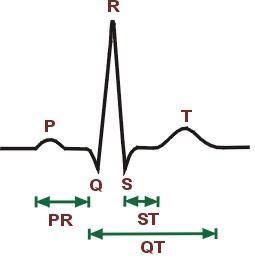

Le rythme sinusal

L'onde P- Depolarisation des oreillettes (systole auriculaire = contraction des oreillettes) : onde de depolarisation s'etendant du noeud sinusal a travers les oreillettes : traduit l'activite du nœud de Keith et Flack.
- Habituellement de 0.08 a 0.1 seconde.
L'espace PR ou espace PQ
- Temps de conduction auriculo-ventriculaire.
- Habituellement entre 0,12 et 0,20 seconde.
Le complexe QRS
- Depolarisation des ventricules (systole ventriculaire = contraction des ventricules) :
- Normalement entre 0.06 et 0.1 seconde.
- Cette duree tres courte indique que la depolarisation ventriculaire apparaet normalement tres rapidement.
- Si la duree du complexe QRS est prolongee (plus d'un dixieme de seconde) alors la conduction est alteree a l'interieur des ventricules.
- Repolarisation des oreillettes (diastole auriculaire = relechement des oreillettes) : se produit pendant la depolarisation ventriculaire.
- Pas d'onde visible puisque comme l'onde de repolarisation des oreillettes est relativement faible en amplitude, elle est masquee par le complexe QRS genere par les ventricules.
Le segment ST
- Temps de repolarisation complete des ventricules
L'onde T
- Repolarisation des ventricules (diastole ventriculaire = relechement des ventricules).
- Plus longue en duree que la depolarisation (la vitesse de conduction de l'onde de repolarisation est plus faible que celle de l'onde de depolarisation).
Voir aussi :